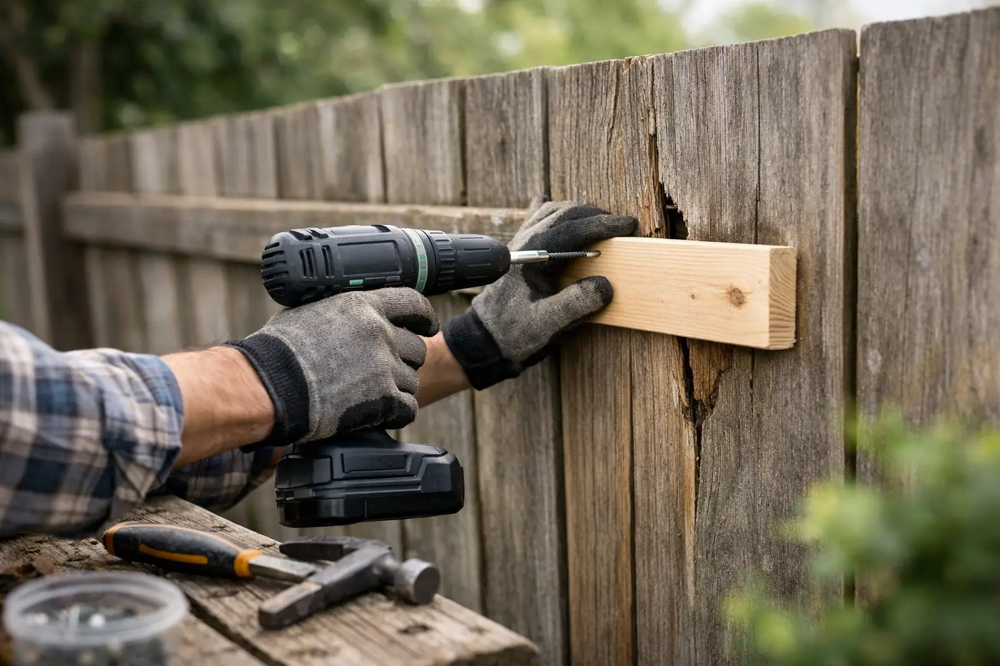

How to Repair Fence Panels Without Replacing Them
By Vitalii Nestorenko · July 11, 2026 · 7 min read
A fence panel rarely fails all at once. Usually, it starts with one loose board, a sagging section after a windy Calgary day, or a bottom rail that has softened where snow and moisture sit too long. Knowing how to repair fence panels can save a solid fence from becoming a full replacement job - but only if you fix the cause as well as the visible damage.
Before picking up a drill, look at the whole run of fencing. A panel can appear crooked because its boards are loose, but it can also be pulled out of line by a leaning post, damaged rail, or shifting gate. The repair that lasts is the one that identifies which part is actually carrying the problem.
Start by Checking What Has Failed
Walk along both sides of the fence in daylight. Press lightly on the panel and rails. If only a few boards move while the rails and posts remain firm, the repair is usually straightforward. If the entire section rocks, leans, or drops when pushed, the posts or rail connections need attention first.
Look closely for cracked boards, popped nails, stripped screws, split rails, dark soft wood, and gaps at the fasteners. Check the base of posts for rot, especially where soil, mulch, or packed snow stays against the wood. In Calgary, freeze-thaw cycles can loosen post footing and make a minor lean more noticeable from one season to the next.
Also check whether the panel is rubbing a gate, deck, shed, or neighbouring structure. A panel that is forced into place can split again even after new screws are installed.
Repair or replace: make the call early
Repair is usually worthwhile when the damage is limited to individual boards, one rail, loose fasteners, or a small cracked section. Replacing a full panel makes more sense when most boards are rotten, rails have lost their strength, or the panel no longer matches the remaining fence after several patch repairs.
For older wood fencing, matching materials can be a factor. A new pressure-treated board will often look lighter than weathered cedar or spruce at first. That is not a structural concern, but it may matter on a street-facing fence or a rental property where appearance counts. You can replace only the damaged pieces and allow them to weather, or stain the repaired section once the wood is dry and ready.
How to Repair Fence Panels With Loose Boards
Loose pickets are one of the most common fence repairs. Nails work loose over time as wood expands and contracts, particularly on panels exposed to sun and wind. Do not simply hammer old nails back into the same enlarged holes. They may hold briefly, then work free again.
Remove or pull any loose fasteners, line the board up with the neighbouring pickets, and secure it to each rail using exterior-rated deck screws. Galvanized or coated screws resist corrosion and are easier to remove later than nails. Use screws long enough to pass through the board and firmly into the rail without coming through the back.
If the board has a small split near the old nail hole, reposition the screw slightly where solid wood remains. For a larger split, replace the board. A split picket can catch wind and transfer strain to the rails beside it.
Keep spacing consistent as you work. A simple spacer cut from scrap wood helps maintain an even gap between vertical boards. This small step keeps the finished panel looking intentional rather than patched together.
Fix a Sagging or Detached Panel
A sagging fence panel often means a rail has pulled away from a post or cracked in the middle. Start by supporting the panel at its correct height with a sturdy block, scrap lumber, or temporary brace. Do not rely on a helper to hold a heavy panel while you fasten it - the panel can shift suddenly and create an uneven repair.
If the rail is sound but its connection has failed, reattach it with appropriate exterior structural screws or galvanized brackets. Pre-drilling can help prevent older, dry rails from splitting. Make sure the panel is level before tightening everything fully.
When a rail is cracked, replace the damaged rail rather than sistering a short piece over it as a permanent fix. A patch may look acceptable at first, but the rail still carries wind load across the panel. Remove the affected pickets as needed, install a matching rail, then refasten the boards in their original positions.
For privacy fences, use at least two horizontal rails for shorter panels and three for taller panels where the design requires it. The right rail layout depends on panel height, board weight, and wind exposure. A tall, solid fence catches far more wind than an open-style fence.
Use a temporary brace when posts are still stable
If a panel is leaning but the post is firm, a diagonal temporary brace can hold it in place while you repair rail connections. Run the brace from the lower area of the panel toward the opposite upper side, then secure it only after the panel has been brought back to level.
A brace is useful during the repair, but it should not hide a failed post. If the post moves in the ground, address that before rebuilding the panel. Otherwise, the repaired section will lean again with the next heavy wind or spring thaw.
Replace Rotten Boards Before Rot Spreads
Rot is not always obvious from the front of a fence. Probe suspicious areas with a screwdriver, especially at the bottom ends of boards and where rails meet posts. Healthy wood feels firm. Wood that crumbles, feels spongy, or accepts the screwdriver deeply has lost structural strength.
Remove rotten boards carefully so you do not damage sound rails behind them. Measure the old board before discarding it, including its width, thickness, and top profile. Cut the replacement to fit, leaving the same clearance above grade as the surrounding boards. Wood sitting directly in soil or against dense mulch stays wet and will fail sooner.
Use pressure-treated lumber where appropriate, or choose cedar when it matches the existing fence and budget. Pressure-treated boards are often practical and durable, while cedar offers a more consistent look on cedar fencing. Either option benefits from proper drainage, suitable fasteners, and a small gap between boards where the design allows.
Do not paint or stain damp replacement wood right away. Give it time to dry according to the product and lumber requirements. Coating wet wood can trap moisture and shorten the life of the repair.
When the Post Is the Real Problem
A damaged panel attached to a bad post is a warning sign, not the main repair. Posts can lean because the wood has rotted below grade, the concrete footing has shifted, or water has collected around the base. You may also see rails pulling away because the post itself is splitting.
Post repair is more involved than replacing a picket. It may require removing a panel, digging around the footing, supporting adjacent sections, and setting a new post plumb at the correct height. It is worth doing properly because one unstable post can affect two panels and a gate.
Be cautious before digging. Identify utility locations and avoid assuming shallow lines are absent just because you cannot see them. If the fence is shared, speak with your neighbour before changing the style, height, or placement. Clear communication prevents a simple repair from becoming a property-line dispute.
Common Fence Repair Mistakes to Avoid
The fastest-looking repair is not always the durable one. Avoid using indoor screws, regular drywall screws, or untreated lumber outdoors. They corrode, snap, or deteriorate far sooner than exterior-rated materials.
Do not fasten new boards onto rotten rails. Likewise, avoid forcing warped boards into a straight line with excessive screw pressure. The wood may split, and the tension can pull the panel out of square. Replace severely warped material instead.
Finally, do not ignore drainage. If the bottom of a panel is constantly buried by soil, leaves, or snow, clearing that contact area can add years to the fence. A few centimetres of breathing room at the base matters more than many homeowners expect.
When It Makes Sense to Call for Help
A loose picket is a reasonable weekend repair. A leaning post, multiple broken rails, storm damage, or a fence that affects a gate often needs a more experienced assessment. The same is true when the repair involves a shared fence, difficult access, or a panel that needs to be safely supported and rebuilt in place.
For homeowners and landlords who would rather not spend a day measuring, lifting, and making repeat trips for materials, Nestor's Home Help can handle practical fence and deck repairs with the same care given to the rest of the home. The goal is not to sell a full replacement when a solid repair will do.
A repaired panel should sit straight, feel firm, drain properly, and blend into the rest of the fence. Take care of the first loose board or soft rail now, and you are far more likely to keep a small outdoor repair from turning into a much larger project later.
Vitalii Nestorenko is the owner of Nestor's Home Help, a licensed and insured handyman business in Calgary. He holds a Master's degree in mechanical engineering and does every job himself.